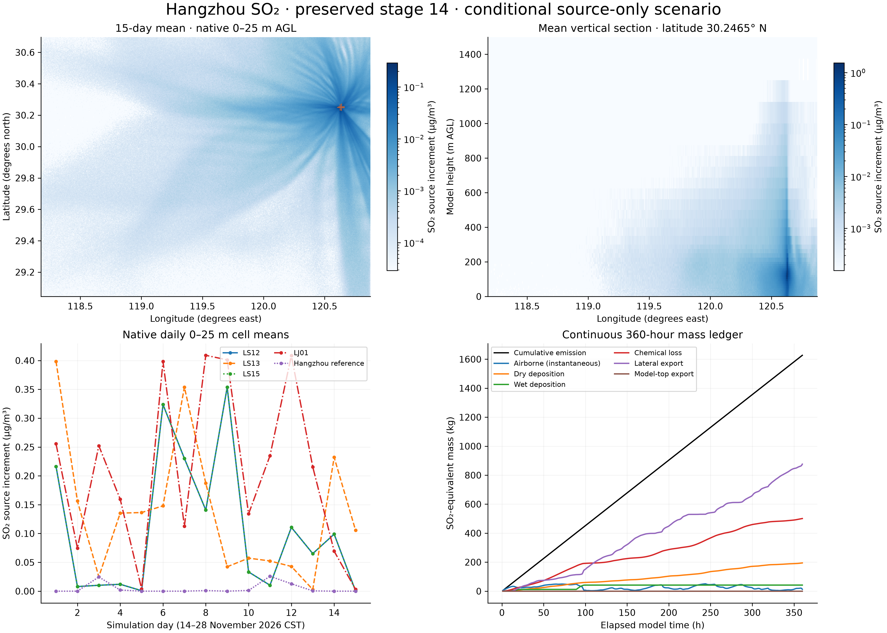

SCIENTIFIC · NATIVE GRID · PRESERVED STAGE 14
Concentrations, vertical structure and mass.
360 continuous model hours · four conditional EIA outlets · 500 m density bins · 52 vertical layers · 30 s transport timestep · 88.47 million emitted particles.

All panels use native 500 m cells. The ground quantity is a 0–25 m AGL volume mean. Daily concentrations average 24 hourly endpoint snapshots; ledger output is hourly. Zeros remain zeros. In the section, color shows the original layer-average concentration; the display range is labeled. Chemical loss is SO₂-equivalent removal, not simulated sulfate concentration.


Interpretation
The model conserves recorded source mass within its numerical tolerance, but sampling and discretization criteria remain partly unmet. Read the separate numerical review before interpreting local peaks. The EIA documents supply design outlet parameters; current operation, schedules and actual-versus-standard gas-flow basis remain unverified. Initial and domain-inflow background are excluded.